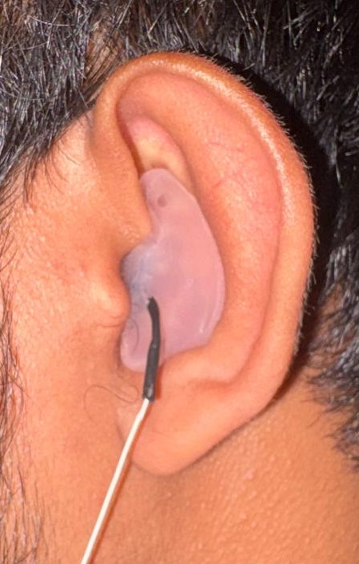
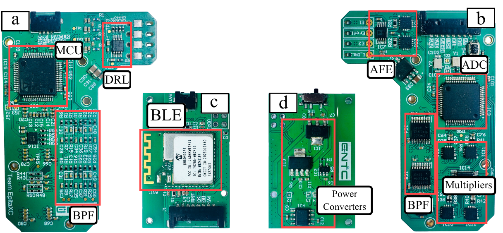
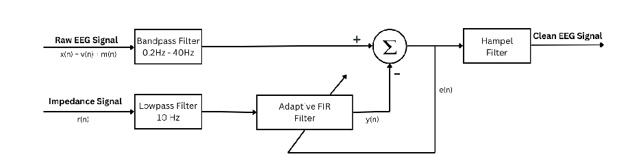

Biomedical engineering · Biosignal systems · 2026
Wearable Ear-EEG system
A wearable dry-contact EEG acquisition system designed to improve signal quality during movement.
RESEARCH SUMMARY
Listening through the ear.
This wearable system acquires ear-EEG alongside a continuously measured electrode–skin impedance (ESI) reference. A 1 kHz sinusoid is injected through the driven-right-leg (DRL) electrode; filtering and I/Q demodulation recover changes associated with impedance mismatch. The resulting signal tracks contact changes as a relative reference—it is not an absolute impedance measurement.
The prototype brings together a custom in-ear electrode, analog front end, 24-bit ADC, STM32 microcontroller and Bluetooth Low Energy link. In the digital pipeline, the ESI reference guides a 64-tap NLMS adaptive filter to reduce motion-related artifact, followed by Hampel filtering for residual outliers.
THE PROTOTYPE
From in-ear sensing to a complete system.


SIGNAL PROCESSING & VALIDATION
Impedance-aware artifact reduction.
Four healthy participants completed controlled recordings, with 12 recordings per motion condition. The reported reductions measure artifact-dominated 2–7 Hz contact-related power; they do not represent broadband EMG removal. The ESI reference guided adaptive filtering while observable alpha-band activity remained. With versus without the 1 kHz stimulus, average relative alpha power differed by 0.06 dB.

These are controlled proof-of-concept results from four healthy participants. The paper identifies ground-truth validation and larger cohorts as next steps for assessing neural-signal preservation.